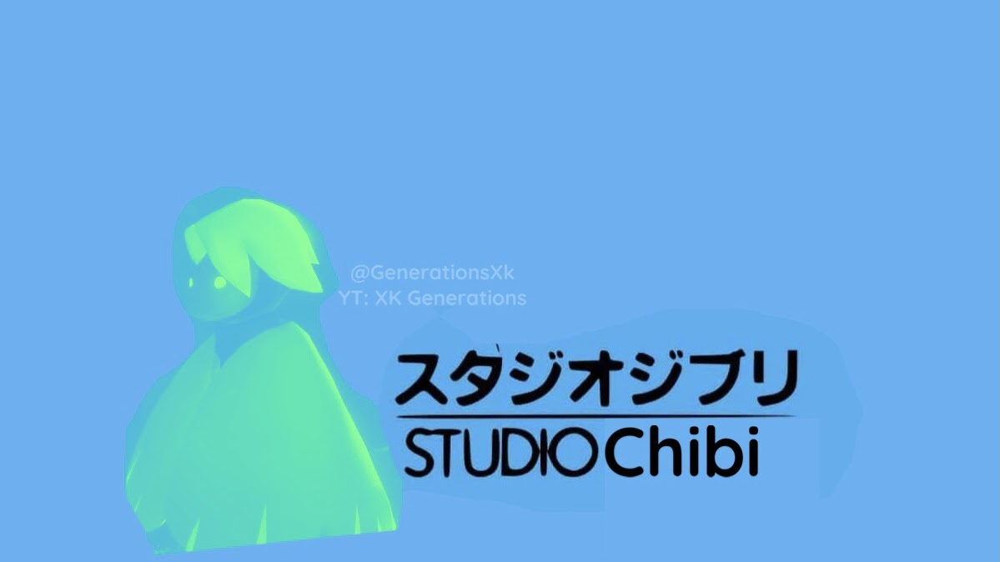
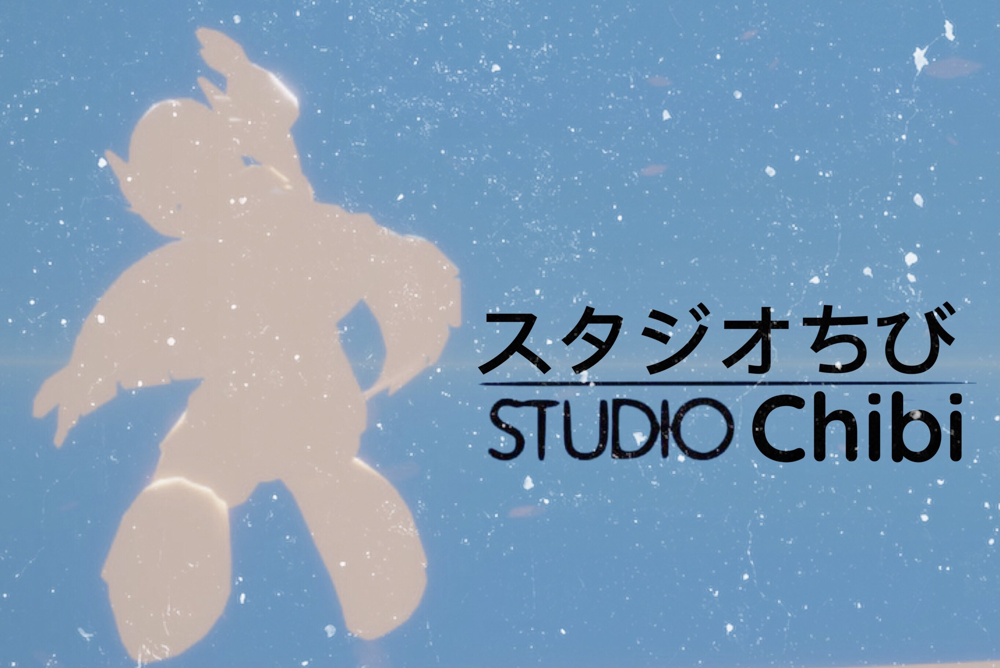

Welcome to Studio Chibi!
Studio Chibi is a group of some of the largest content creators in the Sky: Children of the Light community. Set up by British Sky YouTuber XK Generations, he has managed to get in contact with some of the largest content creators in the community. Some of the organization's most known projects have been the Sky YouTube community rewind which has been given attention by thatgamecompany, the makers of Sky, Journey, Flower, flOw, and Cloud.
The aim of Studio Chibi is to bring all parts of life from the Sky community together and celebrate the culture of the community of Sky and thatgamecompany. This is why most of the members of Studio Chibi has been from many backgrounds of the Sky community. Including meme creators (Crafting Kitten and Emptea), tutorial experts (BluSky and ThySkyGuy), speedrunners (Aztcc and Cribley), and Sky update experts (Toyz and JaneSky).
All of these content creators have been found from all across the world. From America to Indonesia and many more. Studio Chibi is a worldwide known organization with its aim to inspire content creators and players from around the world.
Studio Chibi is run through the XK Generations Channel. Click here to view the channel!
Photos above: Logo Banner Concepts (Designed by XK)